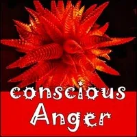
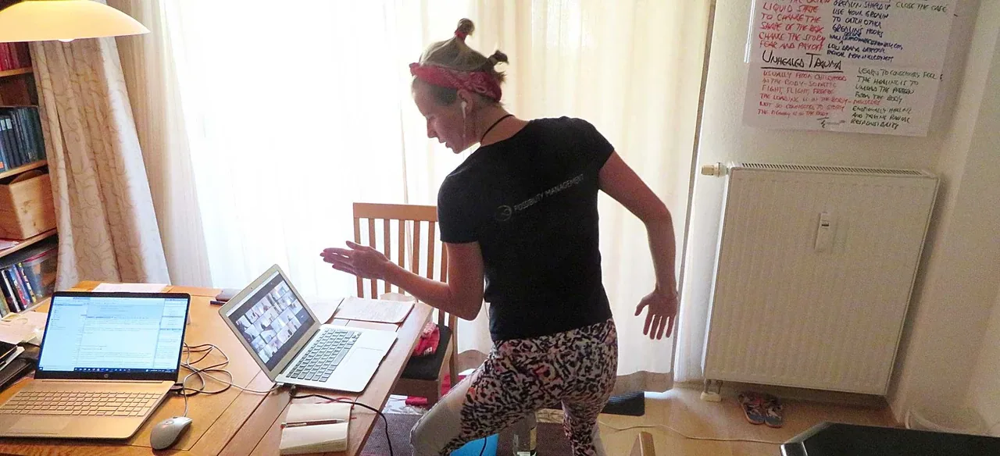
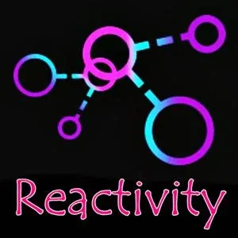
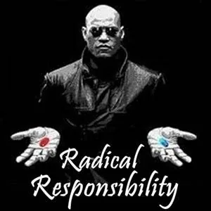
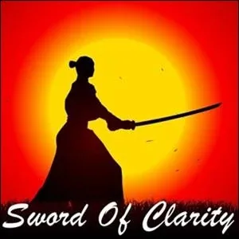
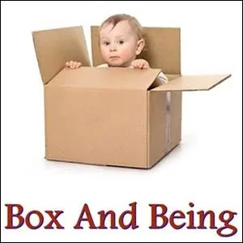

CONSCIOUS
ANGER
- …
CONSCIOUS
ANGER
- …
-
"- You cannot vanish your unconscious anger.- You can only mature it."
- ...if anger is taboo, thought will starve to death. - Conscious Use Of Rage
- Conscious or Unconscious Anger - Your Unsophisticated Ways Of Handling Rage- UNCONSCIOUS USE OF ANGER:- Repress your anger. (Enter denial, the self-created delusion that you are not angry. Just don't go there.)
- Think about being angry. (Let angry thoughts fight invisible arguments in your head. Do not make a sound about it.)
- 'Cathart' your anger. ('Catharsis' is when you throw your anger away, as if anger is a 'bad' feeling, trying to 'calm down' and get some 'relief', instead of discerning whether your anger is a FeelingEmotion
- Sloppily project your anger onto someone else. ("Here you take it! It's about you! This is your fault!")
- CONSCIOUS USE OF ANGER:- Create a container where your anger can be expressed in a safe way. In the case of rage, use it to inform you that now might be a time to make a boundary, to say what you are afraid of saying, to ask for what you want, to say "No!" or "Stop it now!", to create something that has never been created, to go beyond imaginary limits where you have never gone before, to make moves, to explore, to speak out. In other words, use your mind to do something intelligent with your anger.
- What If You Are Sitting On Evolutionary Rocket Fuel And You Do Not Know How To Pilot A Starship?Rage is the passion that shows me exactly where to step.Rage roots me deep into my commitment.Rage stabilizes me in a place where I might be prone to getting pulled into addictive behaviors and thought forms that do not serve my hearts devotion.Rage as a pure white hot anchor, pulls me to center, pierces through the distortions that might blow me off track.Rage was in my body from being in an abusive relationship and made my body physically ill and using the passion of the NO inside that Rage to cut the enmeshed ties and literally PUSH the illness out of my body by severing the energetic chords keeping me tied to harm. After nearly a year of chronic illness, recovered almost completely over night after a deep ceremony of utilizing the energy of Conscious Rage.Rage as a supreme righteousness that took action where there was injustice. On the outside I was extremely calm, steady and grounded. Inside the fire was FLAMING with the Rage of injustice. That Rage gave immense steadfastness. I would NOT quit until justice was served. The Rage was pure white hot power. It was total and absolute. It moved mountains. Justice was eventually served.
 - How I Use My Conscious Anger- from - Israel Kairós- I'm sharing some of my edge- - Noticingabout my Anger discoveries.- 1. Anger is very efficient to - Commit (archived — not captured)myself, in accordance with the time to develop- Agreementsusing fear. My Conscious Anger is much more effective. The- Attentivenessof Conscious Anger sharpens my sense of listening. However to hear what is important to the others, or the real need of the others, that leads to the need for an agreement,- Conscious Sadnessis more effective.
When I tried to use my Conscious Anger to create a deal with my partner, it was a disaster. The energy of Anger drove me to be more direct and practical, and this opened a space for- Low Dramafrom- Reactivity. After trying several times I just had to go to my room and cry a lot. I listened to my Sadness, and what she told me was to use Sadness to further refine my- Proposalby listening more deeply to my partner's needs. The result was incredible. In 3 minutes, we created Agreements with a lot of- Connectionusing Conscious Sadness, and then I used my Conscious Anger to commit myself to the new- Experimentsin the Agreements we created.- 2. I can use 10% Conscious Rage to be completely - Unhookableto- Gremlinhooks. It is very interesting to note that when I am just not available to feed my Gremlin or the Gremlin of the other (without having to specifically say I'm not available) the- Boxesrun out of ways to create tension or conflict, and the Gremlins cannot take over.- 3. I can use 15% Conscious Anger in my transformational listening space to create an - Extraordinaryspace without domination of Gremlins and Boxes. My Anger keeps my- Sword Of Clarityto hand, so I am clear about not wanting to know about the Gremlin or the person's Box. I can then stay focused on being in connection with and listening to the- BEINGof the other.- 4. I can use 20% of - Phase 2Conscious Anger to create a Context in a Space of- Radical Honesty,- Radical Responsibility, and- Radical Relatingwhere I invoke the- Adultwithin every BEING in the- Space.- 5. I can use 10% Conscious Anger to make a - Bubble Of Personal Space (archived — not captured)and a- Grounding Cordmuch more 'firm'. The way I do this is to intentionally direct the energy of my Anger into the 'click' of my- Clickerlike a little energetic explosion of- Declaringin my fingers.
- How I Use My Conscious Anger- from - Israel Kairós- I'm sharing some of my edge- - Noticingabout my Anger discoveries.- 1. Anger is very efficient to - Commit (archived — not captured)myself, in accordance with the time to develop- Agreementsusing fear. My Conscious Anger is much more effective. The- Attentivenessof Conscious Anger sharpens my sense of listening. However to hear what is important to the others, or the real need of the others, that leads to the need for an agreement,- Conscious Sadnessis more effective.
When I tried to use my Conscious Anger to create a deal with my partner, it was a disaster. The energy of Anger drove me to be more direct and practical, and this opened a space for- Low Dramafrom- Reactivity. After trying several times I just had to go to my room and cry a lot. I listened to my Sadness, and what she told me was to use Sadness to further refine my- Proposalby listening more deeply to my partner's needs. The result was incredible. In 3 minutes, we created Agreements with a lot of- Connectionusing Conscious Sadness, and then I used my Conscious Anger to commit myself to the new- Experimentsin the Agreements we created.- 2. I can use 10% Conscious Rage to be completely - Unhookableto- Gremlinhooks. It is very interesting to note that when I am just not available to feed my Gremlin or the Gremlin of the other (without having to specifically say I'm not available) the- Boxesrun out of ways to create tension or conflict, and the Gremlins cannot take over.- 3. I can use 15% Conscious Anger in my transformational listening space to create an - Extraordinaryspace without domination of Gremlins and Boxes. My Anger keeps my- Sword Of Clarityto hand, so I am clear about not wanting to know about the Gremlin or the person's Box. I can then stay focused on being in connection with and listening to the- BEINGof the other.- 4. I can use 20% of - Phase 2Conscious Anger to create a Context in a Space of- Radical Honesty,- Radical Responsibility, and- Radical Relatingwhere I invoke the- Adultwithin every BEING in the- Space.- 5. I can use 10% Conscious Anger to make a - Bubble Of Personal Space (archived — not captured)and a- Grounding Cordmuch more 'firm'. The way I do this is to intentionally direct the energy of my Anger into the 'click' of my- Clickerlike a little energetic explosion of- Declaringin my fingers.

- How to Hold Space For Someone to Unleash Their Conscious Anger - Holding space for someone to learn how to feel their anger - probably for the first time - does not happen through "pushing" them to feel. People are already angry, you do not have to make them angry. Pushing someone to feel their feelings is as abusive as pushing someone to not feel their feelings. Your job as a spaceholder is to hold a safe space for your client to take a risk in expressing an energy they might have never experienced before. The safety comes from you providing- thoughtware upgrades and- new distinctionsthat your client are missing to inner navigate their conscious Anger (and Sadness, Fear and Joy).- The safety comes also from you being unhookable to their - Gremlinstrategies who might make you want to believe that:- - They don't feel anger ever - - They can feel their anger without making sound - The safety comes from your commitment to their commitment to - growing upin relation to their Anger.- Here aress ome core distinctions in learning to feel Anger: - 1. Upgrading the capacity to feel, express and use Anger consciously happens mostly through the voice, not the body. Rage work is mostly voice work, not body work. - When someone is learning how to feel, if they do not make sounds above 21% intense anger they are not feeling their anger. They are most probably thinking they are feeling. Thinking happens in the mind. Feeling happens in the heart. - Ask and / or tell your client what % of conscious anger they are experiencing. If there is no sound, then it is less than 21%.- If someone is showing physical sign of anger (sweat, aggitation, hyperventilation, etc...), and they are not making sounds, then their anger is UNCONSCIOUS. Which means your client has a high numbness bar, and their anger is not expressed consciously. - Ask them what survival strategy have they developped to suppress their anger: imploding, exploding, depression, hysteria, withdrawing, ...?- and - Notice how they are suppressing experiencing their conscious anger right now, and tell them all the ways: you blow it out, you hold it in in your chest, you go in your head, you have an image about anger instead of feeling angry, etc... - 2. If your client is afraid of big sounds or making big sounds, it is often because they have were the subject of unconscious anger in their life - most often their parents - which came with violent shouting. Big sounds is then wired in them with their earlier experience. The healing process to be able to hear and be fine around big sounds is for your client to realize that they have the same sound inside of themselves, and that when they express the sound consciously, they become bigger than the sounds. The sounds are not bigger than them anymore. 3. Take it slowly.- For a man, it is huge to learn how to feel consciously anger. It requires that a part of their identity has to die. All their Anger about the - patriarchy, about the sacrifices they had to make to be accept among the patriarchs, about how they had to disconnect themselves from Nature, the Feminine and the authentic Masculine, about how their mother made them into good boy or tried to 'kill' them, on and on and on, ... Men have huge Anger and in the patriarchy, they are never allowed to feel any of it. Feeling that anger is a betrayal of the patriarchy.- As a spaceholder, keep in mind that all of this is at work when a Men starts unleashing their Anger. Keep the big perspective in mind. - 4. Hint for spaceholder: Try to remember how it was for you to learn to feel your conscious anger, what you heard your own spaceholder say, what you needed to hear, what helped, what didn't. Keep a foot in your first experience of feeling conscious anger so you can have compassion for your client, without rescuing them. - "I know some of you are very worried about flailing wild banshees, screaming their heads off.I get that.For me, I'm more concerned about all the complacent good girls I see, fawning, and playing nice. "Maya Luna, Read full article here
- Resources - # STARR - Calibrate Your Feelings Detector- After watching this S.T.A.R.R. please enter Matrix Code STARRSxx.13 in your free account at the StartOver.xyz game. ( - http://startoverxyz.mystrikingly.com)- # Love And Rage- # STARR - Boundaries (and Holding Space For Making Boundaries)- After watching this S.T.A.R.R. please enter Matrix Code STARRSxx.07 in your free account at the StartOver.xyz game. ( - http://startoverxyz.mystrikingly.com)
- Experiments- Experimenting means to practice simple skills that build together into greater competence.- Competence to one woman seems like magic to another.- Magic is competence in an uncommon dimension.
 - DO SPARK107: YOUR ANGER ABOUT A THING IS THE FUEL YOU ARE GIVEN TO CHANGE THAT THING.- Matrix Code CONANGER.01- By lowering your - Numbness Bar, you can sense into the subtlest sensations of Anger, telling you about things you want to change and improve in your life. You don't have to look anywhere else to find the fuel for making those changes, big or small.- Making Changes, Part I- To start this experiment, dive over to - SPARK107
- DO SPARK107: YOUR ANGER ABOUT A THING IS THE FUEL YOU ARE GIVEN TO CHANGE THAT THING.- Matrix Code CONANGER.01- By lowering your - Numbness Bar, you can sense into the subtlest sensations of Anger, telling you about things you want to change and improve in your life. You don't have to look anywhere else to find the fuel for making those changes, big or small.- Making Changes, Part I- To start this experiment, dive over to - SPARK107 - Making Changes, Part II- Choosea small element of your life that you want to make better. Examples: the cleanliness of your bathroom, your desk, the homepage of your website, the way you are present when someone tells you their name.
- Use less than 10% intensity Conscious Anger to make that thing better. Possibilities for doing this:
- Sit down with your- Beep! Book- I want a shower curtain with wooden rings, not plastic. I want my pens and pencils separated in different containers. I want to repeat every name I hear when I meet the new students tomorrow". Write down what you find.
- Choose three actions you will do. Do them. Each time you do them, notice the sensations in your body after. Did it get better?
- Keep going until you have 3 success stories. Celebrate.
- Describe your experiment and its outcome in your - Beep! Book.
- After completing this experiment, please register Matrix Code - CONANGER.01in your free account at- StartOver.xyz. This Experiment is worth 1 Matrix Point. - USE YOUR CONSCIOUS ANGER TO MAKE THINGS BETTER- Matrix Code CONANGER.02- Choose a larger, more complex thing you want to improve in your life. An agreement, a plan, an assumption, a decision or a - storythat you hold about yourself. For example, you might want to improve:
- the agreement you made with your partner about how you talk about feelings together
- the assumptions you make about what is possible for you and your creativity
- the story you have about yourself in which you decided you failed miserably by not studying something you liked at university.- Generate up to 25% intensity Conscious Anger.
- Tune into the thing you want to improve.
- Let your Anger tell you what you care about, what you take a stand for, what needs to change, what can be improved, in this thing.
- Decide about a next step you will take, and take it with 25% Anger.
- After a couple of days, describe your experiment and its outcome in yourBeep! Book.
- Write an article about what you learned and share it with the world.
- After completing this experiment, please register Matrix Code - CONANGER.02in your free account at- StartOver.xyz. This Experiment is worth 1 Matrix Point. - USE YOUR CONSCIOUS ANGER TO DO SOMETHING AT THE EDGE OF YOUR BOX- Matrix Code CONANGER.03- Your - Boxis a filter that defines what is possible for you in terms of relationship, family, job, money, Love, time, authenticity, et cetera. When you leave your comfort zone, you arrive at the- edgeof your Box. When you reach the edge of your Box, you experience Fear and your Box will tell you to back off and stop. This is the way your Box eliminates options and change. Anything outside of your Box you cannot conceive of, see, sense, experience, imagine, describe, or create.- For this experiment first write in your Beep! BookBoxwon't let you do.
- Lower your Numbness Barso you can feel your feelings at any intensity. Use your Conscious Anger to rate each thing from 1-5; 5 being where you feel the strongest Anger that your Box won't let you do this thing.
- Choose the thing you feel most angry about, and commit to doing it.
- Do it.
- Have a picture or video taken of you while you are living at the Edge of your Box, and a picture of your face once you're done. Share it with 5 of your friends and ask them to guess what you're up to.
- Write in your Beep! Bookfor at least 15 minutes about how it went, and the things you learned from doing this experiment.
- After completing this experiment, please register Matrix Code - CONANGER.03in your free account at- StartOver.xyz. This Experiment is worth 1 Matrix Point.
 - USE YOUR CONSCIOUS ANGER TO GIVE YOUR GREMLIN A NEW JOB TO DO FOR YOU- Matrix Code CONANGER.04- Your - Gremlinis a part of you that is dedicated to a specific set of Shadow Principles, your- Hidden Purpose.- Look at your most recently updated list of 50 Gremlin Foods.
- USE YOUR CONSCIOUS ANGER TO GIVE YOUR GREMLIN A NEW JOB TO DO FOR YOU- Matrix Code CONANGER.04- Your - Gremlinis a part of you that is dedicated to a specific set of Shadow Principles, your- Hidden Purpose.- Look at your most recently updated list of 50 Gremlin Foods. - Notice which foods your Gremlin feeds on, that cost you the most in the consequences.
- Of those foods, choose one that your Gremlin feeds on most often.
- Get into First Position.
- Have your Gremlin on his or her leash and tell them: "SIT."
- Use your energetic eyes to make sure they sit.
- Using conscious Anger, tell your Gremlin, by its name, that you have a new job for them. The job is to catch themselves feeding in this way, and notify you.
- Notice how the job assignment lands for your Gremlin. If they squirm, you may need to turn up your anger. When your Gremlin has accepted this job, say, "GOOD."
- For the next week, write daily for at least 15 minutes in your Beep! Book
- After another week, write again about how this went, or tell someone from your Gremlin Training 3-Cell,Possibility Teamor otherTeamabout the outcomes of your Experiment.
- After completing this experiment, please register Matrix Code - CONANGER.04in your free account at- StartOver.xyz. This Experiment is worth 1 Matrix Point.
 - USE YOUR CONSCIOUS ANGER TO DO A NEW PRACTICE OR A NEW INTENSITY OF PRACTICE FOR ONE WHOLE WEEK- Matrix Code CONANGER.05- This experiment is about experiencing discipline. - Sit down with your Beep! Bookscanyour life. Look for possibilities ofpracticesyou want to do, or current practices you could do at a new intensity.
- USE YOUR CONSCIOUS ANGER TO DO A NEW PRACTICE OR A NEW INTENSITY OF PRACTICE FOR ONE WHOLE WEEK- Matrix Code CONANGER.05- This experiment is about experiencing discipline. - Sit down with your Beep! Bookscanyour life. Look for possibilities ofpracticesyou want to do, or current practices you could do at a new intensity. - Choose one. Use your anger to commit to doing this new practice, or an existing practice at a new intensity, every day for a whole week.
- Use your Anger to do it.
- On the third day, write in your Beep! Bookhow it is going.
- On the seventh day, write in your Beep! Bookhow it went.
- After completing this experiment, please register Matrix Code - CONANGER.05in your free account at- StartOver.xyz. This Experiment is worth 1 Matrix Point.
 - USE YOUR CONSCIOUS ANGER TO CHANGE YOUR STORY ABOUT SOMEONE ELSE- Matrix Code CONANGER.06- Stories are not true. They are Stories. So much of our daily lives consist of Stories. We make Stories up to serve Conscious or Unconscious Purposes. The one True Thing is that everything comes without a Story. Nature is neutral. Things are, and things occur, without any Story attached. Stories take energy to make. If there is a Story attached to something, someone put it there for a Purpose, whether they are aware of that Purpose or not. What is, is meaningless. As someone once said in Possibility Management, " - There are only two things in life: bullshit, and nothing."- Think about someone in your life who you have a storyabout that is not serving intimacy happening between you.
- USE YOUR CONSCIOUS ANGER TO CHANGE YOUR STORY ABOUT SOMEONE ELSE- Matrix Code CONANGER.06- Stories are not true. They are Stories. So much of our daily lives consist of Stories. We make Stories up to serve Conscious or Unconscious Purposes. The one True Thing is that everything comes without a Story. Nature is neutral. Things are, and things occur, without any Story attached. Stories take energy to make. If there is a Story attached to something, someone put it there for a Purpose, whether they are aware of that Purpose or not. What is, is meaningless. As someone once said in Possibility Management, " - There are only two things in life: bullshit, and nothing."- Think about someone in your life who you have a storyabout that is not serving intimacy happening between you. - Write this story in your Beep! Book
- Go somewhere that you can be noisy, maybe to a forest or an empty beach, or in your car.
- Read the story out loud to the trees, the sky, the water, your car's steering wheel.
- Use your Anger to change the story.
- Speak without knowing what you are going to say. Use your Anger to declare a new story about this person. When you have said a new story, be silent and still for one minute while you let the energy of your Anger circulate in your nervous system.
- Tell the new story out loud again. Be silent and still again.
- Tell the new story at least three times, and more if you notice that this is needed for completeness.
- Sense what happened in your bodies.
- After completing this experiment, please register Matrix Code - CONANGER.06in your free account at- StartOver.xyz. This Experiment is worth 1 Matrix Point. - USE YOUR CONSCIOUS ANGER TO WRITE AN ARTICLE- Matrix Code CONANGER.07- Your Anger tells you what you care about, and is fuel for you to create. This experiment is about using your anger to create an article. - In your Beep! BookThings I Feel ANGRY About/Things I CARE About
- For 3 minutes (use a timer), write in a few words a list of things you care about. Add to it constantly.
- Choose which thing you feel most angry about OR choose one thing for no other reason than to START. This is what you will write an article about.
- Read the Write Your Articlewebsite with your topic in mind. Notice your Anger. Turn it up.
- Use your Anger to follow through the steps. Keep a towel handy for twisting to turn up your anger. Try writing in RED.
- Publish your article. Send it to 10 people. Coach a friend into writing their own article about something they care about.
- After completing this experiment, please register Matrix Code - CONANGER.07in your free account at- StartOver.xyz. This Experiment is worth 2 Matrix Points. - USE YOUR CONSCIOUS ANGER TO DISCOVER WHAT YOUR PROJECT IS- Matrix Code CONANGER.08- Your heart is for giving to the people you love. Your heart is nurtured by intimacy in - Radical Relating.- Your soul (your - Being) is for giving to your destiny, your- Quest. Your Being is nurtured by you being turned on by your project.- This experiment is about distilling what the current Project of your Quest is. - Part I 1. Read- SPARK 033- .Do the experiment offered there.- Part II- 1. Get together with a group of - Possibilitators.- 2. Do - 333together.- 3. Take turns, one being the 'Rager' and the others holding space and taking notes. Set a timer for 5 minutes. As a Rager, you use at least 25% Anger to declare: - "I care about..."
- "I want..."
- Turn up your Anger. Keep going. Do not stop to think. Repeat sentences that are meaningful to you as often as you want, deepen them more. You do not have to come up with 188 different things. The spaceholders can give you feedback and coaching as you go on, for you to really tap into your Rage and into what matters to you. - 4. After 5 minutes, you are done, tell your team members what most landed in you. Your team members tell you what most landed in them. As a Rager, take notes. Then, the next person rages. - 5. Take 10 minutes to write about what you harvested from your Rage. Write down all the details and possibilities that come to mind and heart. Also tap into the unknown, writing more than you know. - 6. Choose one action that is the first, next step for realising your project. Let your team members know what this step is. - After completing the experiment, enter a description of your project and Matrix Code - CONANGER.08in your free account at- StartOver.xyz. This Experiment is worth 1 Matrix Point.
 - USE YOUR CONSCIOUS ANGER TO TAKE A STAND FOR YOUR PROJECT- Matrix Code CONANGER.09- This experiment is about using your Anger for your project. - For a whole week, in any meetings, work spaces, and any time you are working on your project, before you begin, go into First Position, consciously turn up your Anger, and say:"I am using my anger to take a stand for this project."
- USE YOUR CONSCIOUS ANGER TO TAKE A STAND FOR YOUR PROJECT- Matrix Code CONANGER.09- This experiment is about using your Anger for your project. - For a whole week, in any meetings, work spaces, and any time you are working on your project, before you begin, go into First Position, consciously turn up your Anger, and say:"I am using my anger to take a stand for this project." - Use your Anger to take the stand for your project. Set alarms and put up signs in your workspace to remind yourself to turn up your Anger to empower your project. Turn it up before you make phone calls, write emails, make videos about your project.
- Notice how it goes, and on the third and last day of the week, write about it for at least 10 minutes in your Beep! Book.
- After completing this experiment, please register Matrix Code - CONANGER.09in your free account at- StartOver.xyz. This Experiment is worth 2 Matrix Points. - USE YOUR CONSCIOUS ANGER TO CLEAN UP PHYSICAL MESS- Matrix Code CONANGER.10- This experiment is about feeling the effect of using Anger when you are cleaning up. Do this experiment the next time you are facing a physical mess. - Turn up your Conscious Anger.
- Do all the dishes after a meal for 20. Wash all the dusty windows in a house. Pick up the trash from a beach.
- GO!
- After completing this experiment, please register Matrix Code - CONANGER.10in your free account at- StartOver.xyz. This Experiment is worth 1 Matrix Point.

- USE YOUR CONSCIOUS ANGER TO CLEAN UP AN ENERGETIC MESS- Matrix Code CONANGER.11- Messes happen in all sorts of forms. Do this experiment next time you notice there is an energetic mess. Maybe communication broke down and reactivity and chaos happened. You can sense it in how the space or relationship shifted, and how it is palpable - the 'elephant in the room' sensation. Maybe there was an accident, and the physical mess got taken care of but you can sense energetically there is still mess. For this Experiment: - Noticethe mess and the consequences of the mess. - Consciously turn up your Anger.
- Clean up the mess. Sense what is needed and do it. If you owe something to someone, give it back. If a communication was not completed, complete it. If you have poop to put on the table, call people to the table and put it there. If a space or your space needs to be cleared energetically, clear it (there are processes for this). Become clear about your true purpose and make a move that is in service of your purpose. Exit the Telegram groups that you are not active in. Create 'Drala' - the capturing of the perception of an awake mind in the space. Move physical objects around in the space until their composition in and with the space hold magical energy.
- Go! Notice the difference when you are done.
- Write about how it went in your Beep! Book
- Keep Experimenting!
- After completing this experiment, please register Matrix Code - CONSANGR.11in your free account at- StartOver.xyz. This Experiment is worth 1 Matrix Point.
 - USE YOUR CONSCIOUS ANGER TO BECOME LESS OF A ZOMBIE- Matrix Code CONANGER.12- Become a pioneer in de-zombification.
- USE YOUR CONSCIOUS ANGER TO BECOME LESS OF A ZOMBIE- Matrix Code CONANGER.12- Become a pioneer in de-zombification. - "A considerable percentage of the people we meet on the street are people who are empty inside, that is, they are actually already dead. It is fortunate for us that we do not see and do not know it. If we knew what a number of people are actually dead and what a number of these dead people govern our lives, we should go mad with horror."- G.I. Gurfjeff - Study the Zombies websiteBeep! Bookappearas if orbehaveas if you are a Zombie.
- Pay particular attention to anything you might be doing to imitate Zombieness so that the 'powerful' 'authoritative' patriarchal Zombies around you are fooled into thinking you are enough like them, and that they do not have to 'kill' you. Write everything down.
- Choose one of your adaptive Zombie-camouflage behaviors.
- Use your Conscious Anger to change that behavior to be a step more towards being your natural self instead of being your adaptive self pretending to be a Zombie so as not to be noticed as being different from the Zombies.
- Stand your ground. Keep breathing. Notice that you do not have to go against anything in order to be a free-standing Being.
- After completing this experiment, please register Matrix Code - CONANGER.12in your free account at- StartOver.xyz. This Experiment is worth 1 Matrix Point.

- USE YOUR CONSCIOUS ANGER TO MAKE A PROMISE AND KEEP IT- Matrix Code CONANGER.13- In Modern Culture, we have learned to avoid - responsibility. We make promises that sound good with no intention of actually doing the thing. We don't even know we are making a promise we are not going to keep, or we pretend we don't know.- Make a conscious promise at the beginning of a day that you will keep by the end of the day. - Start with a small promise. Keep it.
- Make a bigger promise the next day. Keep it.
- Make an even bigger promise the next day. Keep it.
- After keeping three promises, write for at last 10 minutes in your Beep! Bookabout what you learned.
- After completing this experiment, please register Matrix Code - CONANGER.13in your free account at- StartOver.xyz. This Experiment is worth 1 Matrix Point.
 - USE YOUR CONSCIOUS ANGER TO MAKE NO PROMISE THAT YOU CAN'T KEEP- Matrix Code CONANGER.14- For one whole month, make no promise that you don't keep. - To do this experiment, begin by declaring to your Possibility Team,3-Cellor anotherTeamthat you are making no promise you can't keep for one month.
- USE YOUR CONSCIOUS ANGER TO MAKE NO PROMISE THAT YOU CAN'T KEEP- Matrix Code CONANGER.14- For one whole month, make no promise that you don't keep. - To do this experiment, begin by declaring to your Possibility Team,3-Cellor anotherTeamthat you are making no promise you can't keep for one month. - Ask them to be on your team about this. Tell them at least one story of a promise that you did not keep, and tell them how your BoxandGremlinwork around promises - keeping them and not keeping them. This way your Team knows what to look out for. This is not about them being responsible for you. This is about having a team.
- Once every week, write in your Beep! Bookabout how this is going. Tell your Team how it is going.
- Write a poem about promises that can't be kept.
- At the end of the month, please register Matrix Code - CONANGER.14in your free account at- StartOver.xyz. This Experiment is worth 2 Matrix Points. - USE YOUR ANGER CONSCIOUSLY IN WHIZZ BANG MODE- Matrix Code CONANGER.15- Make a list of 5 things you need to do that you don't really want to do: paying your bills, making a boundary with your neighbour, fixing the leaky faucet, pulling the weeds.
- Pick one.
- Use your anger consciously to go into WHIZZ BANG mode and do it in half the time you would usually do it in.
- You might suck someone else into the WHIZZ BANG space and have High Level Fundoing it.
- Don't forget to shift out of Whizz Bang Mode at the end of it, or you might sleep and dream in half the time you usually do.
- After completing this experiment, please register Matrix Code - CONSANGR.15in your free account at- StartOver.xyz. This Experiment is worth 1 Matrix Point.
 - USE YOUR CONSCIOUS ANGER TO NOTICE BEING OFFENDED- Matrix Code CONANGER.16- When someone says or does something and you get offended, this is unconscious emotional anger that comes from your self-importance. - Use your Conscious Anger to notice how many times you get offended per day.
- USE YOUR CONSCIOUS ANGER TO NOTICE BEING OFFENDED- Matrix Code CONANGER.16- When someone says or does something and you get offended, this is unconscious emotional anger that comes from your self-importance. - Use your Conscious Anger to notice how many times you get offended per day. - Write each thing that offends you into yourBeep! Book
- Choose one thing and decide to get offended about this thing for one day.
- The next day, do notget offended about this thing.
- The third day, get offended about it again.
- Afterthe third day, write about everything you noticed.
- Make a video of yourself conveying a manual of How To Get Offended.
- After completing this experiment, please register Matrix Code - CONANGER.16in your free account at- StartOver.xyz. This Experiment is worth 1 Matrix Point.
 - USE YOUR CONSCIOUS ANGER TO BRING YOUR HANDS BACK TO LIFE- Matrix Code CONANGER.16- In school and at home we have been trained to leave our hands lifeless. We are supposed not to fidget, doodle, touch or take things as we listen to years of food for our intellectual body in school, or as we 'be good' and wait while the grown-ups to finish their endless conversation with an old neighbour in the street. - The power that drives us to use our hands is up to 7% Anger. This experiment is about learning to use this Anger so that your hands come back to life again. With your hands you can express, shape space, describe, tell stories, show worlds, touch, stop, invite, create, call, direct and establish things, people, energy or sound in a space. Let your hands get Wild again. - For three days, declare at least 3 times and up to 5 times a day that you are using Conscious Anger to bring your hands back to life. You can set a timer to remind you, and you can make signs on your walls or fridge to remind you.
- USE YOUR CONSCIOUS ANGER TO BRING YOUR HANDS BACK TO LIFE- Matrix Code CONANGER.16- In school and at home we have been trained to leave our hands lifeless. We are supposed not to fidget, doodle, touch or take things as we listen to years of food for our intellectual body in school, or as we 'be good' and wait while the grown-ups to finish their endless conversation with an old neighbour in the street. - The power that drives us to use our hands is up to 7% Anger. This experiment is about learning to use this Anger so that your hands come back to life again. With your hands you can express, shape space, describe, tell stories, show worlds, touch, stop, invite, create, call, direct and establish things, people, energy or sound in a space. Let your hands get Wild again. - For three days, declare at least 3 times and up to 5 times a day that you are using Conscious Anger to bring your hands back to life. You can set a timer to remind you, and you can make signs on your walls or fridge to remind you. - Direct the power of your Conscious Anger into your hands.
- See what happens.
- Write about it in yourBeep! Book
- After completing this experiment, please register Matrix Code - CONANGER.17in your free account at- StartOver.xyz. This Experiment is worth 1 Matrix Point.
 - USE YOUR CONSCIOUS ANGER TO BRING YOUR FACE BACK TO LIFE- Matrix Code CONANGER.18- We have been trained to be nice people, have no wrinkles, have a sweet personality, and as a result our face muscles are dead and we have a plastic lifeless faces with atrophied muscles. This experiment is about bringing your face back to life. - For three days, every morning, every midday and every evening, turn up your Anger and move your face. Move it in all the ways, find new ways to move your face that you never used before.
- USE YOUR CONSCIOUS ANGER TO BRING YOUR FACE BACK TO LIFE- Matrix Code CONANGER.18- We have been trained to be nice people, have no wrinkles, have a sweet personality, and as a result our face muscles are dead and we have a plastic lifeless faces with atrophied muscles. This experiment is about bringing your face back to life. - For three days, every morning, every midday and every evening, turn up your Anger and move your face. Move it in all the ways, find new ways to move your face that you never used before. - During the day, continue to let your face come alive, using Conscious Anger. Use it to express when you say, "No!"and, "Yes!"and,"Stop!"and,"Wait!"and,"Hello!"etc.
- Discover the moments of the day your face is most numb. In the bus, at work, when your partner is watching you. Discover more ways that low level Conscious Anger can bring your face back to life in those moments.
- Ask someone to Mirror you. This means they copy any sound and any movement you make, simultaneously. Go slow enough so they can follow you precisely, exactly like a mirror. Practice all your face movements with this person and watch how their face comes alive.
- Switch. Have them move your face with their face. Explore meditative, tender qualities as well as huge, out of control ones.
- Get it on video and publish it on YouTube.
- Go and have coffee or tea together to celebrate. Drink it with alive faces.
- After three days, please register Matrix Code - CONANGER.18 and your YouTube link in your free account at- StartOver.xyz. This Experiment is worth 1 Matrix Point.
 - USE YOUR CONSCIOUS ANGER TO UNCLENCH YOUR JAW- Matrix Code CONANGER.19- So much of our anger is held in our jaw. We grind our teeth. Conscious Anger is expressed with mouth open and teeth showing. - Do this experiment with your Possibility TeamorRage Club, as a safe space where you can make noise together.
- USE YOUR CONSCIOUS ANGER TO UNCLENCH YOUR JAW- Matrix Code CONANGER.19- So much of our anger is held in our jaw. We grind our teeth. Conscious Anger is expressed with mouth open and teeth showing. - Do this experiment with your Possibility TeamorRage Club, as a safe space where you can make noise together. - Press your fingers into the hinges of your jaw. There will be a sensation of frozen energy there, stuck from being stored in the jaw.
- Keep pressing into the sensation and let the frozen energy flow into the rest of your body.
- Let out the sounds. Move your jaw in new ways. Do not hurt yourself.
- For the next week, massage and move your jaw again at least once a day.
- Write about what you notice during this experiment in your Beep! Book
- After a week you (and your Team or Rage Club) can enter Matrix Code - CONANGER.19in your free account at- StartOver.xyz. This Experiment is worth 1 Matrix Point.
 - USE YOUR CONSCIOUS ANGER TO IMITATE CONSCIOUS ANGER- Matrix Code CONANGER.20- Watch three of the 100 Emotional Healing Process demo videos on the - Create Possibilitywebsite and do it right along with them. We recommend:- #96:- Learning To Feel Anger / Boundaries With Mother- #35:- 3-3-3 Practice Distinctions- #64:- Cleaning Out The Heart And Being Reborn- #54- Making boundary with Dad- #32- Reclaiming Anger- Watch the Client. Whatever they are doing, you do. Map on to that. Imitate it to get access to your own Anger. Learn from the distinctions that get landed in them. Commit to finding the new doors in your own body, and opening them.
- USE YOUR CONSCIOUS ANGER TO IMITATE CONSCIOUS ANGER- Matrix Code CONANGER.20- Watch three of the 100 Emotional Healing Process demo videos on the - Create Possibilitywebsite and do it right along with them. We recommend:- #96:- Learning To Feel Anger / Boundaries With Mother- #35:- 3-3-3 Practice Distinctions- #64:- Cleaning Out The Heart And Being Reborn- #54- Making boundary with Dad- #32- Reclaiming Anger- Watch the Client. Whatever they are doing, you do. Map on to that. Imitate it to get access to your own Anger. Learn from the distinctions that get landed in them. Commit to finding the new doors in your own body, and opening them. - Write for 15 minutes into your Beep! Bookabout what you discovered.
- Notice in the next days what changed in you. Write about this in your Beep! Book.
- Write an articleabout what you learned from someone else's Anger work.
- After completing this experiment, please register - CONSANGR.20in your free account at- StartOver.xyz. This Experiment is worth 3 Matrix Points.
 - USE YOUR CONSCIOUS ANGER TO DO 3-3-3 RAGE- Matrix Code CONANGER.21- The practice of - 3-3-3is to do 3 minutes of rage, 3 times a week, for 3 months. It rewires your nervous system and expands the capacity of your Emotional Body to access and experience the energy of Anger.- Read the 3-3-3 website.
- USE YOUR CONSCIOUS ANGER TO DO 3-3-3 RAGE- Matrix Code CONANGER.21- The practice of - 3-3-3is to do 3 minutes of rage, 3 times a week, for 3 months. It rewires your nervous system and expands the capacity of your Emotional Body to access and experience the energy of Anger.- Read the 3-3-3 website. - Watch the videoof coaching # 35 with Josef and Clinton where there is the coaching of a 3-3-3. Follow every instruction Clinton gives, and take an energetic photograph of how it can be.
- Do 3 minutes of rage, 3 times a week for 3 months.
- Noticehow your experience of Rage changes and evolves over time. Write about this in your- Beep! Book.
- After completing this experiment, please register Matrix Code - CONANGER.21in your free account at- StartOver.xyz. This Experiment is worth 3 Matrix Points.

- USE YOUR CONSCIOUS ANGER TO WALK AROUND WITH A SWORD- Matrix Code CONANGER.22- Clarity does not appear in your mind, contrary to what we have been hammered into at school. Modern culture teaches us that if you understand, comprehend and are logical then you have the tool you need to live life. Actually, our experience has shown us that understanding is a hindrance to life. - Clarity is not held in your mind, it is held in your 5 bodies and in particular, distinctions are held in your energetic body. - Distinctions create Clarity. Clarity creates Possibility.- Your - Sword of Clarityis an energetic tool. If you try to understand this, it won't work. If you sense it, you can find out how having your Sword of Clarity on your side, or ready for action in your dominant hand, sharpens your ability to make distinctions about this or that, now or later or never, yes or no, me or you or the other person or no one, stop or go. This experiment is about integrating the sensation of having a sword on your side.- Get a sword, at least 95 cm long. You can get them from an Aikido store, for about 10 Euros. - One time a week for a whole month, go into the center of town, where there are people. Walk as a warrior or warrioress with your sword and your Conscious Anger and meet people.
- Sense what it takes to inhabit the Warrioress or Warrior. Use your Conscious Anger to be this.
- After completing this experiment, please register Matrix Code - CONANGER.22in your free account at- StartOver.xyz. This Experiment is worth 2 Matrix Points. - USE YOUR CONSCIOUS ANGER TO MAKE AN ANGRY CAKE- Matrix Code CONANGER.23- Why do you think Chefs often seem to be angry? They are using their anger to create. This experiment is about using your own Conscious Anger to create. - Pick a simple cake recipe.
- Make it. With the energy of Conscious Anger. Break the eggs with Anger, beat the batter with Anger, put it in the oven with Anger, and eat it with someone, Angrily.
- Write about it for at least 10 minutes in your Beep! Book.
- After completing this experiment, please register Matrix Code - CONANGER.23in your free account at- StartOver.xyz. This Experiment is worth 1 Matrix Point.
 - USE YOUR CONSCIOUS ANGER EXPRESS TWICE AS MUCH ANGER- Matrix Code CONANGER.24- This experiment is about using more Anger than your Box would normally let you. - In a Possibility Team, or at a Transformational Party with Possibility Management folk, create an Improvisation Space: a market space, a waiting room, a wedding or any other social place.
- USE YOUR CONSCIOUS ANGER EXPRESS TWICE AS MUCH ANGER- Matrix Code CONANGER.24- This experiment is about using more Anger than your Box would normally let you. - In a Possibility Team, or at a Transformational Party with Possibility Management folk, create an Improvisation Space: a market space, a waiting room, a wedding or any other social place. - While you do this, the whole thing, for at least 50 minutes, have everyone speak twice as loud as they usually talk, with twice as much force of Anger than your Boxes would usually allow.
- Share about how that went for each person.
- If people are up for more, look for a poem and divide the lines of the poem so everyone has a line. The first person starts with the first line with 5% anger and every next person says the next line with twice as much anger as the previous person until it doesn't get bigger anymore. Improvise where to go after the climax. Use your Conscious Anger to keep going until you can feel it's the End, and to not keep going after that. Feel the end of the Space as a group.
- After completing this experiment, please register Matrix Code - CONANGER.24in your free account at- StartOver.xyz. This Experiment is worth 1 Matrix Point. - USE YOUR CONSCIOUS ANGER TO LEARN JUGGLING- Matrix Code CONANGER.25- People try to learn to juggle in all kinds of states, and it doesn't work. If you use Anger consciously, you can learn to snatch the fucking balls out of the air and keep them where they belong to successfully juggle. Each move is Experimental, and you need to be the - Experimenter.- Take three lemons, oranges, socks with rice in them or three other things.
- Learn to juggle, using your Anger.
- Be sure to distinguish your Anger from emotional frustration. Do not mix it with other Feelings. If you experience mixed Feelings, ask for an Emotional Healing Process
- When you can do it for at least one minute, make a video, using your anger and at the end say, "I DID IT."
- After completing this experiment, please put your video online and register Matrix Code - CONANGER.25in your free account at- StartOver.xyz. This Experiment is worth 2 Matrix Points. - USE YOUR CONSCIOUS ANGER TO DO ANGRY WRITING- Matrix Code CONANGER.26- In your - Beep! Book- "I am angry because..."and write why you are angry.- Keep going for half an hour. In the middle of the anger writing break your pen and throw it across the wall and get a new pen. - Do this once a day for 3 days. Then edit all that you have written into an - Articlethat might make a difference for someone else because of your distinctions, practical examples, possibilities, and inspiring stories. Publish your article. Please register Matrix Code- CONSANGR.26in your free account at- StartOver.xyz. This Experiment is worth 1 Matrix Point. - USE YOUR CONSCIOUS ANGER TO DO ANGER YOGA- Matrix Code CONANGER.27- In public, if possible, do yoga on a mat, in special clothes and do Anger Yoga. GO for it. Use loud sounds. Make faces. Don't hurt yourself. - Do it for at least half an hour, once a day for three days. - After completing this experiment, please register Matrix Code - CONANGER.27in your free account at- StartOver.xyz. This Experiment is worth 1 Matrix Point.

- USE YOUR CONSCIOUS ANGER TO PERSIST EVEN IF YOUR BOX SAYS TO QUIT- Matrix Code CONANGER.28- Choose a physical skill or activity, like running, swimming, lock-picking or knitting. - Do it and keep doing it until you notice your Box saying, "This is enough."
- At this exact moment, use your Conscious Anger to keep going. Do not leave your body as a way to avoid feeling the pain. Instead, use your Conscious Anger to break through the little sentence as if you are driving your care through a wooden police barrier across the road. That little Voice has controlled your life until now. You have sold your freedom to that little Voice for so many years... Now you are breaking one of your Box's old rules. You are ignoring the little Voicein your head... Instead:Kabango!You are suddenly through the barrier into a whole new world!
- Noticethat there is a part of you that can- Observeyour sensations and what is going on. Notice what shifts when you become this new- Part.
- Write about your findings in your Beep! BookLive Full Out!
- After completing this experiment, please register Matrix Code - CONANGER.28in your free account at- StartOver.xyz. This Experiment is worth 1 Matrix Point.
- NOTE:This website is a- Bubble in the Bubble Map- StartOver.xyz- doorway- experiments- upgrade your thoughtware- point of origin- create- possibility- knowledge- about. Your- thoughtware- with. When you- change your thoughtware- liquid state- reorganizes- feelings- emotions- upgrading your thoughtware- build matrix- consciousness (archived — not captured)- low drama- reactivity- collectively build- responsibly- CONANGER.00to log your Matrix Point for reading this website on- StartOver.xyz
- The gateway to delivering your true calling is initiations into the Adult Ego State.- If you are not stabilized into Adulthood you remain Hookable by circumstances.- - Clinton Callahan- possibilitymanagement.org